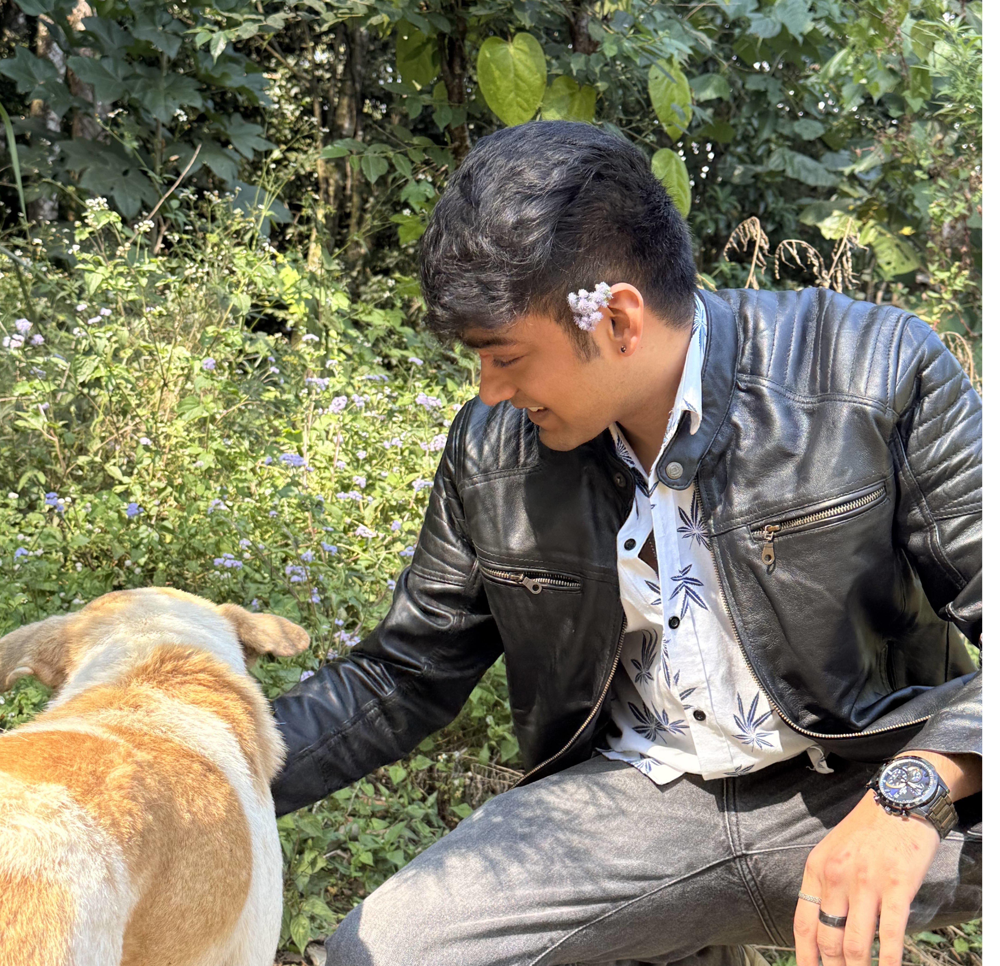

> Shaurya Maan Gusain
I’m a backend-focused Software Engineer with a knack for building systems that handle real world scale and make people’s lives easier. I am currently working at Statiq. My proficiency lies in Python,Golang and Databases.
Outside of work I love watching football, hiking and reading. Lately I've been into Russian literature. Recommended authors - Anton Chekhov, Fyodor Dostoevsky
🛠️ Skills
Programming Languages: Python, Java, Golang
Frameworks & Libraries: Flask, FastAPI, Spring Boot, Gin
Databases: MySQL, PostgreSQL, MongoDB, Redis
Developer Tools: Git, Swagger, Postman, Kafka
Cloud & DevOps: AWS, Docker, CI/CD Pipelines
Software Development: Microservices Architecture, Scalable System Design, API lifecycle management
Agile Practices: Scrum, Sprint Planning, Stand-ups
Soft Skills: Mentoring Interns, Cross-team Collaboration, Production Issue Troubleshooting, Conflict resolution